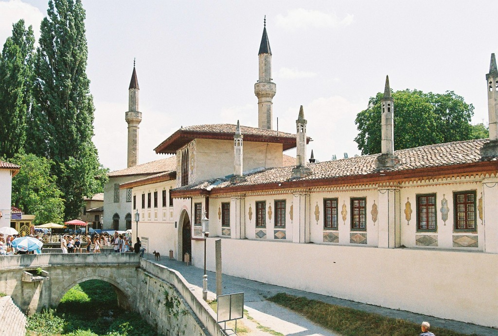

В отличие от других объектов Крыма, появившихся до установления российского протектората, дворец имеет вполне конкретные сроки строительства. Заложена будущая резиденция была в 1530-х годах по приказу легендарного хана Сахиба Гирея. Эту же дату связывают с появлением самого города, до XVI века на месте будущего Бахчисарая была голая степь. Буквально за 150 лет татарские рабочие застроили территорию в 12 гектаров. Создавались гостевые дома, комнаты для заморских послов, гарем и сторожевые башни. Правители отколовшейся Золотой Орды были уверены, что дворец окажется неприступен, потому камень использовался только для отделки внутренних помещений. Это и сыграло злую шутку, когда в 1736-м году город взяла российская армия — деревянный хан-сарай приказали сжечь дотла. Но прежде чем уничтожить память о «степных царях», была проведена опись всех сооружений с детальными схемами. Практически погибшую в огне жемчужину Бахчисарая начали реконструировать через пару лет. Территория уменьшилась втрое, зато по убранству из золота и мрамора заново отстроенные залы превзошли даже замки Константинополя. Работы торжественно закончились к 1787-му году, когда Екатерина II впервые посетила русский Крым. Отремонтированные стены простояли недолго. Из-за неверных расчётов влажности при строительстве, через 40 лет почти полностью сгнили несколько зданий. Попавший сюда в 1820-м году Александр Пушкин был удручён состоянием дворца, и поэма «Бахчисарайский фонтан» посвящена не столько истории любви, сколько золотому веку татарского владычества. |
 |